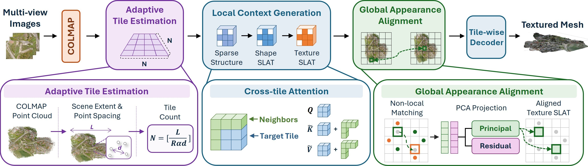

ScaleScene3D scales pretrained 3D generative priors to produce detailed and coherent large-scale textured meshes from multi-view images.
ETRI
Pretrained 3D generative models produce detailed geometry and appearance but are primarily designed for object-centric generation within a limited spatial extent. Recent approaches address this limitation by partitioning large scenes into smaller spatial regions and applying pretrained 3D generative priors to each region. However, scaling tiled generation to large multi-view scenes makes it challenging to maintain local geometric continuity and global appearance consistency.
We present a training-free framework for large-scale textured mesh generation from multi-view images. Our key idea is to scale tiled generation to large scenes with increased spatial detail while coordinating generation both locally and globally. We introduce local context tiled generation to improve geometric continuity between neighboring regions and global appearance alignment to reduce appearance discrepancies across distant regions. An adaptive scene decomposition further determines the number of tiles according to the input scene geometry. Experiments demonstrate improved geometric and appearance fidelity over existing approaches while enabling fine-grained generation of large-scale scenes.

Conditions each tile on its surrounding context to improve geometric continuity between neighboring regions.
Coordinates appearance across the whole scene to reduce discrepancies between distant regions.
Determines the number of tiles from the input scene geometry, so spatial detail scales with the scene.